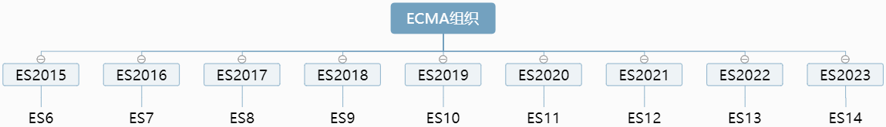

ECMAScript、ES6 简史，let、const、var 区别和应用
一、什么是 ES
我们首先来看 ECMA 是什么
- ECMA，读音类似“埃科妈”，是欧洲计算机制造商协会（European Computer Manufacturers Association）的简称，是一家国际性会员制度的信息和电信标准组织。1994 年之后，由于组织的标准牵涉到很多其他国家，为了体现其国际性，更名为 Ecma 国际（Ecma International），因此 Ecma 就不再是首字母缩略字了。
- 了解了这段历史，为了技术书写的专业性，如果文章中提到
Ecma的时候，可以写成Ecma或者ecma，不要写成全大写的ECMA，除非是ECMAScript或ECMA-XXX这类专有名词。
什么是 Javascript?
- 1995 年，著名的网景公司（Netscape）的
Brendan Eich开发了一种脚本语言，最初命名为Mocha，后来改名为LiveScript，最后为了蹭当时火热的Java热度重命名为了JavaScript。
什么是 ECMAScript?
- 了解了
Ecma国际和JavaScript，就方便了解ECMAScript了，ECMAScript是一种由Ecma 国际在标准ECMA-262中定义的 脚本语言 规范。这种语言往往被称为 JavaScript或JScript，但实际上JavaScript和JScript是ECMA-262标准的实现和扩展。
一句话总结ES
ES是指ECMAScript，Ecma是一个专门为技术制定标准的组织。ECMAScript是由Ecma 国际通过ECMA-262标准化的脚本程序设计语言。
ECMAScript是一种标准或者说叫做一种规范JavaScript是ECMAScript的一种实现，也就是说JavaScript是一门遵循了ECMAScript语言规范而设计的编程语言
什么是神秘的 ECMA-262
- Ecma 国际的标准都会以
Ecma-Number命名，ECMA-262就是ECMA 262 号标准，具体就是指ECMAScript遵照的标准。1996 年 11 月，网景公司将 JavaScript 提交给 Ecma 国际进行标准化。ECMA-262 的第一个版本于 1997 年 6 月被 Ecma 国际采纳。 - Ecma 国际制定了许多标准，而 ECMA-262 只是其中的一个，所有标准列表查看
- 官网：
https://www.ecma-international.org/
- Ecma 国际的标准都会以
语法提案的批准流程
任何人都可以向标准委员会（又称 TC39 委员会）提案，要求修改语言标准。
一种新的语法从提案到变成正式标准，需要经历五个阶段。每个阶段的变动都需要由 TC39 委员会批准。- Stage 0 - Strawman（展示阶段）
- Stage 1 - Proposal（征求意见阶段）
- Stage 2 - Draft（草案阶段）
- Stage 3 - Candidate（候选人阶段）
- Stage 4 - Finished（定案阶段）
一个提案只要能进入 Stage 2，就差不多肯定会包括在以后的正式标准里面。ECMAScript 当前的所有提案，可以在 TC39 的官方网站
探秘 TC39 神秘组织
TC39 是
Technical Committee 39的简称，它是制定ECMAScript标准的委员会。
TC39（Technical Committee 39）是推进 ECMAScript 发展的委员会。其会员都是公司。TC39 定期召开会议，会议由会员公司的代表与特邀专家出席。
由各个主流浏览器厂商的代表构成，主席团三人分别来自Bloomberg、Igalia和Microsoft，下设三个工作组（task group）TC39-TG1（通用语言）、TC39-TG2（国际化 API 规范） 、TC39-TG3（安全）。TC39-TG1工作组主要工作是通用、跨平台、供应商中立的编程语言 ECMAScript® （JavaScriptTM>） 的标准化。这包括语言语法、语义以及支持该语言的库和补充技术。TC39-TG2工作组 ECMAScript® 国际化 API 标准。支持需要适应不同人类语言和国家/地区使用的语言和文化约定的程序。TC39-TG3工作组 ECMAScript® （TM） 安全模型对当前和未来不断变化的威胁形势有效。
ECMAScript 版本
ECMAScript = 由 ECMA 这个标准化组织制定的一个语言标准
语言标准就是：语法 和 API- 语法：如，规定了如何声明变量、如何声明常量、如何声明函数还规定了我们有哪些数据类型（基本数据类型，应用数据类型等 … 还有其他很多东西）
- API：如，方法和函数（如数组的方法，对象，全局的 …）
从2015年开始ECMA组织决定每一年都会发布一个新的版本，这个新的版本就会包括：ES新特性，用于语法的升级或弥补之前一些语法的缺陷。
从命名上看，ES6被命名为ECMAScript2015，通过命名可以体现出当前这个版本所对应的年份。所以我们经常说的ES6和ES2015就指的是同一个版本，以后每一年发布的版本我们都会使用年份去命名。 - 按 ES 的命名方式：ES6 -> ES7 -> ES8 -> ES9 -> … = 这些都可以统称为 ES6+
- 按年份的命名方式：ES2015 -> ES2016 -> ES2017 -> ES2018 -> …
不论使用哪一种命名方式都是可以的，都不重要，只要我们清楚他们对应的方式就 OK 的
- 比如 6 对应的 2015 ，7 对应的 2016 即可
- 当我们看到对应的文章或描述的时候能对应上，知道别人在讲什么就好
- 同时也需要知道 ES6 才是 ES6+的基础，如：ES7、ES8、ES9 本质都是在 ES6 的基础上扩展的语法或 API（升级或弥补之前一些语法的缺陷）
- 我们学习的重心还是要放在 ES6 上，不要本末倒置就好
每年的ES新版本都会引入很多新特性，如下
版本 发布时间 主要更新内容 ES6（ES2015） 2015年 改动最多，具有里程碑意义；新增变量 let 和 const，箭头函数、新增数组方法，如：map、filter 等、解构赋值，快速复制数组和对象，模板字符串、模块化，面向对象，Promise 等 ES7（ES2016） 2016 年 数组扩展： Array.prototype.includes()，幂运算符ES8（ES2017） 2017 年 异步编程解决方案、新增 async、await、对象扩展： Object.values()，Object.entries()、对象属性描述：Object.getOwnPropertyDescriptors()、字符串扩展：String.prototype.padStart()，String.prototype.padEnd()、尾逗号Trailing commasES9（ES2018） 2018 年 异步迭代： for await of，Symbol.asyncIterator、正则表达式扩展：dotAll，具名组匹配，后行断言、对象扩展：Rest & Spread、Promise 扩展：Promise.prototype.finally()、字符串扩展：放松模板字符串文字限制ES10（ES2019） 2019 年 对象扩展： Object.fromEntries()、字符串扩展：String.prototype.trimStart()，String.prototype.trimEnd()、数组扩展：Array.prototype.flat()，Array.prototype.flatMap()、修订Function.prototype.toString()、可选的 Catch Binding：省略 catch 绑定的参数和括号、JSON 扩展：JSON superset，JSON.stringify()增强能力、Symbol 扩展：Symbol.prototype.descriptionES11（ES2020） 2020 年 全局模式捕获： String.prototype.matchAll()、动态/按需导入：Dynamic import()、新的原始数据类型：BigInt、Promise 扩展：Promise.allSettled()，allSettled() vS all()、全局对象：globalThis、可选链：Optional chaining、空值合并运算符：Nullish coalescing OperatorES12（ES2021） 2021 年 String.prototype.replaceAll：替换字符不用写正则了、Promise.any()、WeakRefs：使用弱引用对象、逻辑运算符和赋值表达式：`ES13（ES2022） 2022 年 Top-level Await（顶级 await）、Object.hasOwn()、at()、error.cause、正则表达式匹配索引、类 class：公共实例字段，私有实例字段，私有方法、静态公共字段、静态私有字段、静态私有方法，类静态块
ES6 之前的历史版本
之前的版本中有
ES1 ~ ES3，ES5 ~ ES6唯独跳过了 ES4，因为- ES4 被废弃了 ，因为 ES4 是一次非常大胆的改革。但是因为太激进了，导致了 ES4 和 ES3 像两门截然不同的语言，跨度太大以至于被废弃了。
- 它的一些不太激进的部分被吸收进了 ES5
- 激进一些的被吸收进了 ES6
- 更激进一些就在后边的版本，接着吸收
ES1 和 ES2 都是比较原始的版本，都还不太成熟，真正成熟的是 ES3，我们现在用的最多其实就是 ES3，可能你以为我们用的 ES5 比较多，但在 ES6 之前你用的最多的还是 ES3 里边的内容
比如：我们现在用的最多的 ES3 中的内容 - do while
- switch
- 正则表达式
- 等等 … 一系列我们用得到的语法和 API
而我们感觉用的比较多的 ES5 如下方法反而用的不多，可能都没有用到过，当然这个跟我们关系不大，因为这是跟兼容性有关的，因为之前的 ES3 兼容性是非常好的，因此用的更多。 - forEach
- map
- filter
- Object.create
- Object.defineProperty
- 等 …
版本 发布时间 主要内容 ES1 1997年 制定了语言的基本语法 ES2 1998年 较小的改动，只改变编辑方式 ES3 1999年 引入正则表达式、异常处理try/catch、格式化输出等，IE 开始支持 ES4 2007年 过于激进，未发布 ES5 2009年 引入严格模式、JSON，扩展对象、数组、原型、字符串、日期方法等
ES、ES6 与 JavaScript 的关系
- JavaScript（浏览器端）= ECMAScript（语法+API）+ DOM（文档对象模型） + BOM（浏览器对象模型）
- ES 等同于 ECMAScript ，是语言的标准，6 是版本号，即 ES6 = ECMAScript 这门语言的第 6 代标准
ES6 的兼容性
- 主流浏览器的最新版几乎全部支持 ES6
- IE 老版本等不支持的浏览器，可以用
Babel转码 - 因此，放心大胆的使用 ES6 即可
- 兼容性检测查询地址：
http://kangax.github.io/compat-table/es6/
ES6 环境搭建
目前各大浏览器基本上都支持 ES6 的新特性，其中 Chrome 和 Firefox 浏览器对 ES6 新特性最友好，IE7~11 不支持 ES6
如果浏览器不支持 ES 新的语法时，怎么办
从 ES6、ES7、ES8、ES9、ES10、ES11、ES12、ES13 … 到未来更多新的语法
ES 每一年都会不断的更新，我们的目的是希望这些语法都能被浏览器所识别，但问题是这些新的语法并不能被所有的浏览器非常好的识别。
因为，我们的浏览器也是用代码写的，ES 这些新的语法之所以能被浏览器识别是因为浏览器的代码能够识别 ES 新的方法、函数、API 等。但并不是每一个浏览器厂商都会随着 ES 的更新而同步升级的。
- 其中做的最好的是 Google 浏览器，因此强烈建议大家在进行前端开发的时候，首选 Google 浏览器，并进行调试。同时 Google 浏览器的调试功能也非常强大，我们可以很方便的定位问题或分析网页的性能等问题。
- 当 ES 新的语法不能被浏览器识别时，我们就会配置相应的工具来将 ES 新的语法转换成浏览器能够识别的代码。
- 我们都知道 ES5 是可以很好的被浏览器识别的，我们通过
Babel将ES6及最新版本的语法转换成ES5就能够被浏览器识别了。- 一般
Babel都会配合Webpack来一起使用。因此，我们先专注学完ES6+相关语法后，再来学习Webpack和Babel
二、let 和 const
ES6（ES2015）新增加了两个重要的 JavaScript 关键字: let 和 const。
什么是 let 和 const ？
let 和 const 是用来声明变量或声明常量的，在 ES6 之前我们声明变量都是使用 var，在 ES6 中
let替代var，声明变量const声明常量，constant的缩写
let 和 const 的用法
let 和 const 的用法与 var 一样
var username = "清心老师";
let age = 18;
const sex = "female";
console.log(username, age, sex); // 清心老师 18 female
- 什么是变量，什么是常量 ？
var、let声明的就是变量，变量一旦初始化之后，还可以重新赋值const声明的就是常量，常量一旦初始化，就不能重新赋值了，否则就会报错
var username = "小明";
username = "小花";
console.log(username); //小花
>
let age = "22";
age = "30";
let arr1 = [1];
arr1.push(2);
console.log(age, arr1); //30 [1, 2]
>
const arr2 = ["A"];
arr2.push("B");
console.log(arr2); //['A', 'B']
const sex = "男";
sex = "女"; // 控制台报错 Uncaught TypeError: Assignment to constant variable. 错误意思：给常量赋值了
console.log(sex);
- const 的注意事项
- 使用 const 声明常量，一旦声明，就必须立即初始化，不能留到以后赋值
// 以下错误演示
const sex; // Uncaught SyntaxError: Missing initializer in const declaration 未捕获语法错误：const声明中缺少初始值设定项
sex = 'male';
>
// 正确的做法是：声明+初始化应该一气呵成
const sex = 'male';
- const 声明的常量，允许在不重新赋值的情况下修改它的值
- 情况一：const 声明的是基本数据类型
- 对于基本数据类型来说，我们是没有办法在不重新赋值的情况下修改它的值
// 基本数据类型
const sex = "male";
sex = "female"; // Uncaught TypeError: Assignment to constant variable.
- 情况二：const 声明的是引用数据类型
const声明常量为引用类型，不可以重新赋值，但可以修改里面的值。
// 引用数据类型
const person = {username: "清心"};
// 对person重新赋值，通过前边的学习，我们知道对于const声明的常量来说是不被允许的
// person = {}; // 报错了 Uncaught TypeError: Assignment to constant variable.
>
// 但，引用数据类型不一定要通过重新赋值的方式来修改值
// 可以直接找到对应的属性，对它完成修改
person.username = "arry";
console.log(person); // 正确输出修改后的对象 {username: 'arry'}
- 为什么需要 const ？
思考：
- 我们为什么需要常量，难道不够用吗 ？
- 如果够用的话谁还用 const 呢 ？
// 假如只有let的情况，我们期望声明的 sex 值一旦声明后就是不变的。
// 当然性别一般情况下就是不变的，也符合常识
let sex = "male";
// ... 经历很多程序之后，如果不小心修改了 sex 的值，浏览器也不会报错
sex = "semale";
console.log(sex); // semale
>
// 我们可以看到 sex 的值被修改了，其实它按我们的期望来讲就是隐形一个错误
// 也就是说这样的错误很可能发生，并没有任何提示，但它确实是一个错误，会造成我们的程序出现问题，类似这样的问题在过去么有什么很好的办法解决，只能通过开发者自己小心来定义
- 但，const 的出现就不会有以上的问题了
// 我们现在使用 const 将 sex 声明为常量
const sex = "male";
// ... 如果不小心完成了以下赋值操作，就报错了
sex = "semale"; // Uncaught TypeError: Assignment to constant variable.
console.log(sex);
使用 const 就直接从语法层面杜绝了类似错误的发生，我们在实际开发中也不需要为这些问题而小心翼翼了，这就是我们为什么需要 const 的原因。
- const 的设计初衷：const 就是为了那些一旦初始化就不希望重新赋值的情况而设计的
- 什么时候用 const ，什么时候用 let
什么时候用 const 声明常量，什么时候用 let 声明变量，这个在实际开发中经常会困扰大家。之前我们只有一个 var 没得选，好处就是用就完了。
那么，现在有得选了，到底使用 const 好呢 ？还是用 let 好呢 ？
- 对于一些比较简单情况我们一眼能够看出进来的，就直接使用就好，没必要考虑什么 。如下下代码， 就直接用 let 就好
for (let i = 0; i < 5; i++) {}
- 对于一些在刚开始写代码的时候，我们也不清楚到底是用 let 还是 const
实际开发中的经验总结
- 当你不知道用什么的时候，我们可以先用
const来声明，即使不修改也不会报错，如果后边发生了修改。这时，也不用担心 ！因为程序会报错，再修改成 let 也是来得及的。- 只要错误不被淹没都可以随时修改。这样的好处就是，即使发生了错误也不会漏掉。
- 如果一开始就用
let，不小心值就发生了改变，但这并不是我们希望发生的。- 因此，推荐大家在实际开发中不知如何抉择时，可以使用这个的方式。
三、let、const 和 var 的区别
let、const 和 var 的区别总共有 6 点：
区别 说明 用处不同 let用来替代var来声明变量,const用来声明常量；const声明的变量，必须在声明时完成赋值； 重复声明 在同一作用域下，var允许重复声明变量,let和const不允许重复声明变量和常量 变量提升 var存在变量提升,let和const不存在变量提升,所以let和const声明的变量必须要在声明后才能使用，否则就会报错 暂时性死区 只要作用域内存在let、const，他们所声明的变量或常量就自动绑定这个区域，不再受到外部作用域的影响；在当前作用域的let或const声明前操作对应变量或常量就会报错。var不存在暂时性死区 window对象关联 在全局作用域中var声明的变量会自动成为window对象的属性。而let和const声明的变量和常量与window不会有任何关联，但仍是全局变量，在任何位置都可以访问它 块级作用域 var不存在块级作用域。let和const声明的变量或常量会形成块级作用域，但形成块级作用域的前提是let或const必须在 {}中。有两种情况不会形成作用域，一个是函数，一个是对象
- 不允许重复声明
- 不存在变量提升
- 暂时性死区
- window 对象的属性和方法（全局作用域中）
- 块级作用域
其中块级作用域是 let、const 和 var 之间最重要的一个区别了。这也是我们面试真题中高频面试题了，能否真正给出有竞争力的回答，就看我们是否有真正的理解到位了。
不允许重复声明
- 重复声明：是指在同一作用域下已经存在的变量或常量，又声明了—遍
- 同一作用域下，var 允许重复声明，let、const 不允许
- 场景一
// 如：使用var重复声明变量
var i = 1;
// ... 在写了很多行代码之后，突然忘记了之前有声明过a变量，又声明了一次
var i = 2;
console.log(i); // 2 ，这里最可气的是 控制台居然没有报错，还给我们修改了值
>
// 如：使用 let 或 const 重复声明变量
let n = 1;
// ...
let n = 2; // Uncaught SyntaxError: Identifier 'n' has already been declared 已声明标识符 "n"
console.log(n);
>
// 使用 const 声明与 let 类似
- 场景二
// 声明一个函数（以函数参数的形式声明的变量）
function foo(i) {
let i = 2; // Uncaught SyntaxError: Identifier 'i' has already been declared 已声明标识符 "i"
}
foo();
注：
以上 let 或 const 重复声明变量时，直接报错，会明确的告诉我们该变量已被声明了，不能再重复声明一遍。这样，就从语法层面直接杜绝了错误的发生。
我们可以看到，使用 let 和 const 声明都是类似的。因此在学习后边的区别学习中，就不单独把 const 拿出来讲了，let 已经可以代表了，let 和 const 的表现是一致的。
不存在变量提升
var命令会发生“变量提升”现象，即变量可以在声明之前使用，值为undefined。这种现象多多少少是有些奇怪的，按照一般的逻辑，变量应该在声明语句之后才可以使用。- 为了纠正这种现象，
let命令改变了语法行为，它所声明的变量一定要在声明后使用，否则报错。
- var 会提升变量的声明到当前作用域的顶部
- 不声明，直接使用：会报错
// 不声明变量，直接使用
console.log(a); // Uncaught ReferenceError: a is not defined
- 先输出，后声明：不会报错
console.log(a); // undefined
var a = 1;
// 没有报错，输出了 undefined ，这就涉及到了变量提升
>
// 以上代码通过变量提升后，实际的相当于如下步骤
var a;
console.log(a); // undefined
a = 1;
console.log(a); // 1
>
// 其实变量提升带给我们更多的是困惑，因为它会和我们的想法和逻辑是不相符的，这也是我们学习JS需要记住的点
- let、const 不存在变量提升
console.log(a); // Uncaught ReferenceError: Cannot access 'a' before initialization 初始化之前无法访问 “a”
let a = 1;
总结
let和const之所以不存在变量提升，还是为了让我们养成良好的编程习惯。- 对于所有的变量或常量，我们一定要做到先声明，后使用
暂时性死区
- 只要作用域内存在
let、const，它们所声明的变量或常量就自动 “绑定” 这个区域，不再受到外部作用域的影响let、const存在暂时性死区，var不存在
let a = 1;
function foo() {
console.log(a); // Uncaught ReferenceError: Cannot access 'a' before initialization 初始化之前无法访问“a”
let a = 2;
}
foo();
>
// 以上代码存在全局变量 a ，但函数作用域内 let 又声明了一个局部变量 a ，导致后者绑定这个函数作用域
// 所以在 let 声明变量前，输出 a 会报错
ES6 明确规定
- 如果区块中存在
let和const命令，则这个区块对这些命令声明的变量从一开始就形成封闭作用域。只要在声明之前就使用这些变量，就会报错。- 总之，在代码块内，使用
let命令声明变量之前，该变量都是不可用的。这在语法上称为 “暂时性死区” （temporal dead zone ，简称TDZ）
- 场景一
if (true) {
// TDZ开始
tmp = "abc"; // ReferenceError
console.log(tmp); // ReferenceError
>
let tmp; // TDZ结束
console.log(tmp); // undefined
>
tmp = 123;
console.log(tmp); // 123
}
>
// 上面代码中，在let命令声明变量tmp之前，都属于变量tmp的 “死区”
- 场景二
- 有些“死区”比较隐蔽，不太容易发现
function bar(x = y, y = 2) {
return [x, y];
}
>
bar(); // 报错
bar(2, 3); // 不报错
>
// 上面代码中，调用bar函数之所以报错，是因为参数x默认值等于另一个参数y，而此时y还没有声明，属于“死区”。
// 如果y的默认值是x，就不会报错，因为此时x已经声明了。
>
function bar(x = 2, y = x) {
return [x, y];
}
bar(); // [2, 2]
- 场景三
- 使用let/const声明变量时，只要变量在还没有声明完成前使用，就会报错。
// 不报错
var x = x;
>
// 报错
let x = x;
// ReferenceError: x is not defined
>
// 上面代码报错，也是因为暂时性死区。使用let声明变量时，只要变量在还没有声明完成前使用，就会报错。
// 上面这行就属于这个情况，在变量x的声明语句还没有执行完成前，就去取x的值，导致报错"x 未定义"。
注：
- ES6 规定暂时性死区和let、const语句不出现变量提升，主要是为了减少运行时错误，防止在变量声明前就使用这个变量，从而导致意料之外的行为。这样的错误在 ES5 是很常见的，现在有了这种规定，避免此类错误就很容易了。
- 总之，let、const 存在暂时性死区，暂时性死区的本质是：在当前作用域，所要使用的变量已经存在，不会再访问该作用域以外的同名变量，并且只有在声明变量之后，才可以获取和使用该变量，否则就会报错。
- 同样，只要养成良好的编程习惯，对于所有的变量或常量，做到先声明，后使用就没有问题。
window 对象的属性和方法
全局作用域中，
var声明的变量，通过function声明的函数，会自动变成window对象的属性或方法
// 全局作用域中，var声明的变量，通过function声明的函数，会自动变成window对象的属性或方法
var age = 20;
function add() {}
console.log(window.age);//20
console.log(window.add === add);//true
全局作用域中，
let、const声明的变量 或function声明的函数，不会自动变成window 对象的属性或方法
// 全局作用域中，let、const 声明的变量 或 function声明的函数，不会自动变成window对象的属性或方法
let age = 20;
const add = function () {};
console.log(window.age); // undefined
console.log(window.add === add); // false
块级作用域
let、const和var最重要的区别即：是否拥有块级作用域。
在深入了解它们的区别前，我们需要了解一下，在 JavaScript 中有哪些作用域：
- 全局作用域
- 函数作用域/局部作用域
- 块级作用域（ES6 新增）
上面是
JavaScript中的三种作用域，那什么是作用域呢 ？
- 首先要明白的是：几乎所有的编程语言都存在在变量中储值的能力，存储完就需要使用这些值。所以，作用域就是一套规则，按照这套规则可以方便地去存储和访问变量。
在 ES5 中的作用域有全局作用域和函数作用域，而块级作用域是 ES6 的概念。
- 全局作用域
全局作用域顾名思义，就是在任何地方都能访问到它，在浏览器中能通过
window对象拿到的变量就是全局作用域下声明的变量
var username = "icoding";
console.log(window.username); // icoding
>
// 使用 var 定义的变量，可以在 window 对象上拿到此变量
// 这里的 name 就是全局作用域下的变量
- 函数作用域
- 函数作用域，也称为局部作用域，所有写在函数内部的代码，就是在函数作用域中
- 声明在函数作用域中的变量为局部变量，从外层是无法直接访问函数内部的变量
function foo() {
var username = "icoding";
}
console.log(username); // Uncaught ReferenceError: username is not defined
在函数内部定义的 username 变量，在函数外部是访问不了的。要想在函数外部访问函数内部的变量可以通过
return的方式返回出来。
- 块级作用域（ES6 新增）
块级作用域是 ES6 的概念，它的产生是要有一定的条件的
- 在花括号
{}中，使用let或const声明的变量，才会产生块级作用域。
这里需要注意的是 - 块级作用域的产生是
let或const带来的，而不是花括号，花括号的作用是限制let或const的作用域范围。 - 当不在大括号中声明时，
let或const的作用域范围是全局，但是不在 window 对象身上
- 在花括号
- 在使用 var 声明的情况下，可以看出，外层的 age 会被 {} 中的 age 覆盖，所以没有块级作用域的概念
// var声明的变量，不会产生块级作用域
var age = 18;
{
var age = 20;
console.log(age); // 20
}
console.log(age); // 20
- 使用
let方式声明时，{}内外是互不干涉和影响的，如果在声明age的前面进行打印的话，还会报错，这个时候，age处于暂存死区，是不能被使用的，
let age = 18;
{
console.log(age); // Uncaught ReferenceError: Cannot access 'age' before initialization
let age = 20;
console.log(age); // 20
}
console.log(age); // 18
- 在低版本浏览器中不支持 ES6 语法，通常需要把 ES6 语法转换成 ES5，使用 babel 把上面的代码转换后得到如下结果：
var age = 18;
{
console.log(_age); // undefined
var _age = 20;
console.log(_age); // 20
}
console.log(age); // 18
从上面的代码中可以看出：
虽然在 ES6 语法使用的是相同的变量名字，但是底层JS进行编译时会认为他们是不同的变量。也就是说即使花括号中声明的变量和外面的变量是相同的名字，但是在编译过程它们是没有关系的。
- ES6 允许块级作用域的任意嵌套
{
{
{
{
let username = "icoding";
{
let username = "icoding";
}
}
}
}
}
- 上面代码使用了一个五层的块级作用域，每一层都是一个单独的作用域。第四层作用域无法读取第五层作用域的内部变量。
- 所以，内层作用域可以定义外层作用域的同名变量。
- 块级作用域的出现，实际上使得获得广泛应用的匿名立即执行函数表达式（匿名 IIFE）不再必要了。以前我们想要将某个全局变量变成私有的，我们会用 IIFE 来实现，现在有了块级作用域，我们只需要用块级作用域来解决就好。
// IIFE 写法
(function () {
var age = ...;
...
}());
>
// 块级作用域写法
{
let age = ...;
...
}
- 为什么需要块级作用域 ？
我们通过之前的学习知道，ES5 只有全局作用域和函数作用域，没有块级作用域，这带来很多不合理的场景。所以在 ES6 中新增了块级作用域。
- 第一种不合理场景： 内层变量可能会覆盖外层变量
var atmp = 2;
>
function foo() {
console.log(atmp);
if (false) {
var atmp = "hello world";
}
}
>
foo(); // undefined
>
// 上面代码的原意是，if代码块的外部使用外层的atmp变量，内部使用内层的atmp变量。
// 但是，函数foo执行后，输出结果为undefined，原因在于变量提升，导致内层的atmp变量覆盖了外层的atmp变量。
- let 和 const 有块级作用域，就可以避免这种问题产生
if里面是一个块级作用域
let atmp = 2;
function foo() {
console.log(atmp);
if (false) {
let atmp = "hello world";
}
}
foo(); // 2
- 第二种不合理场景： 用来计数的循环变量泄露为全局变量
for (var i = 0; i < 2; i++) {
console.log("循环内：" + i);
}
console.log("循环外：" + i); // 2
>
// 上面代码中，变量i只用来控制循环，但是循环结束后，它并没有消失，泄露成了全局变量。
- let 和 const 有块级作用域，就可以必免这种问题产生
for (let i = 0; i < 2; i++) {
console.log("循环内：" + i);
}
console.log("循环外：" + i); // Uncaught ReferenceError: i is not defined
>
// 之所以会报错，是因为使用 let 或 const 声明的变量是有块级作用域的
let声明的i和for(){}共同构成了块级作用域，因此在块级作用域内定义的变量i只能在for的{}内可访问- 执行完
for循环后，该作用域就销毁了，我们在全局作用域中就找不到i，就报错了
- 深入理解块级作用域
很多人对于
for(let i=0; i<5; i++){ }这里不理解，不理解为什么外面就访问不到 i 了。我们说这是 es6 的语法规定的，let 可以形成块级作用域。- 那如果没有 es6，那我们要实现相同的功能，用 es5 如何模拟呢 ？
// es6版本
for (let i = 0; i < 5; i++) {
console.log(i);
}
console.log(i);
>
// babel转换成对应的es5版本
("use strict");
>
for (var _i = 0; _i < 5; _i++) {
console.log(_i);
}
console.log(i);
- 很多人对于
for(let i=0; i<5; i++){ }每次迭代都会创建一个新的块级作用域不太理解，这里我们将 es6 的语法代码用 babel 转换成 es5 的语法来看下
// es6版本 for 循环一共创建了5个块级作用域
for (let i = 0; i < 5; i++) {
setTimeout(function () {
console.log(i);
}, 1000);
}
console.log(i);
>
// babel转换成对应的es5版本
("use strict");
>
var _loop = function _loop(i) {
setTimeout(function () {
console.log(i);
}, 1000);
};
for (var _i = 0; _i < 5; _i++) {
_loop(_i);
}
console.log(i);
- 作用域链的复习
关于变量的查找会涉及到作用域链，我们再次来复习一下
function foo() {
// 函数作用域
for (let i = 0; i < 2; i++) {
console.log(i); // 0 1
// 块级作用域
}
console.log(i); // Uncaught ReferenceError: i is not defined
}
>
// 全局作用域
>
foo();
console.log(i); // Uncaught ReferenceError: i is not defined
代码解读
- 首先最外层会有一个全局作用域
- 当函数
foo()被调用时，会形成一个函数作用域，注：只有当函数被调用时，才会形成函数作用域，函数调用结束函数作用域就销毁- 继续执行
for循环，for(){}和let共同构成了一个块级作用域- 这时，我们就有了一个嵌套的三层的作用域，最内层是块级作用域，外层是函数作用域，最外层是全局作用域
- 当在
for循环中打印输出i，首先会在当前的块级作用域中去查找是否存在i如果找到了就输出，如果查找到i不存在，那就往上一层作用域中查找或向外层作用域中查找（即foo函数构成的函数作用域中查找），如果还没有，就继续往外层查找（到全局作用域中查找i）如果还是找不到就报错了，这时就终止了- 这样的过程就构成了一个链条的形式，由内层 -> 到外层 -> 一直到最外层，这些作用域的节点和节点之间就构成了一个链条，这就是变量或常量的查找的一个链条。
- 首先在当前作用域中找，找到了就不会再找了，就跟外层作用域没关系了，如果找不到就会往外找，一直找到最外层，找到全局作用域中才截止。
- 因此，
for循环中找到了块级作用域中i就输出0 1就不会往外层查找了- 在函数作用域中打印输出
i依次往外层查找，发现没有找到i就报错了，这时程序就终止了- 如果，前边都没有报错，当
foo()函数执行完毕后，最后在全局作用域中打印输出i同样也会报错- 要注意：变量的查找只能由内往外，不能由外往内查找
总结
- 作用域链的流程：内层（块级）作用域 -> 外层（函数）作用域 -> … -> 全局作用域
我们是以这样的顺序去查找变量或常量的，当然也不会一直查下去，一但找到就终止了
- ES6 中有哪些块级作用域
- 大部分具有花括号
{}的结构，都可以构成块级作用域
- 大部分具有花括号
{
let age = 20;
console.log(age); // 20
}
console.log(age); // Uncaught ReferenceError: age is not defined
- 报错原因：
{}花括号就是一个块级作用域， 它执行完毕之后就会被销毁
- 还具有
{}块级作用域的结构，如：{}、for(){}、while(){}、do{}while()、if(){}、switch(){}- 其中
function(){}也有{}但属于函数作用域，不属于块级作用域- 另外，还有对象也有
{}如：const person = {}。注：对象是不构成任何作用域的，我们知道JavaScript的作用域就 3 个，块级作用域、函数作用域、全局作用域注：以上这些结构只有和 let、const 配合使用才会有块级作用域，
var是没有块级作用域的。
总结：
- 块级作用域是
ES6中新增的一个作用域，指在花括号{}里面使用let或const关键字声明变量或常量，就会形成一个块级作用域。- 但有两个需要特殊记忆，函数和对象的花括号
{}不属于块级作用域。
四、let、const 在实际开发中的应用
应用实现需求：
- 有 3 个按钮，点击 0 号按钮打印索引值为 0，点击 1 号按钮打印索引值为 1，点击 2 号按钮打印索引值为 2
在 ES6 之前使用 var 如何实现
- 实现方式一
><style>
.btn {
width: 50px;
height: 50px;
font-size: 30px;
}
></style>
>
><button class="btn">0</button>
><button class="btn">1</button>
><button class="btn">2</button>
><script>
var btns = document.querySelectorAll(".btn");
for (var i = 0; i < btns.length; i++) {
btns[i].onclick = function () {
console.log(i);
};
}
></script>
- 运行以上程序，分别点击 0，1，2 三个按钮都会输出
3，而不是按我们想象的 0，1，2 来输出- 因为点击事件发生时，函数作用域内找不到i，就会往外找；i是在全局作用域下声明的变量，在for循环结束后，在全局作用域下i=3；
- 在 ES6 之前，我们该如何解决这个问题 ？
- 利用立即执行函数，形成闭包
><script>
var btns = document.querySelectorAll(".btn");
for (var i = 0; i < btns.length; i++) {
(function (index) {
btns[index].onclick = function () {
console.log(index);
};
})(i);
}
></script>
- 运行以上代码，分别点击 0，1，2 三个按钮会正确输出 0，1，2
代码分析
- 首先我们可以看到声明的立即执行函数会在 for 循环中循环执行 3 次
- for 循环中的 var 声明的变量 i 是全局变量，当循环 3 次后 i 在全局作用域中 依然还是 i = 3
- 当 for 循环 3 次，其中的立即执行的匿名函数
(function(index){ ... })(i); 就调用了 3 遍，调用函数就会创建函数作用域，这样就会创建 3 个函数作用域。并且每一个函数作用域中就会有一个index- 当点击 0，1，2 三个按钮时，就会调用事件处理函数对应的内部
function(){console.log(index);}函数，这时就会形成自己的函数作用域- 开始打印输出
console.log(index);这是就会一层层的往外找，找到立即执行匿名函数作用域中的index找到了，就打印输出 0，1，2 ，这时候就不会再到外层全局作用域中去找 i = 3了- 这时候，你会发现这里的实现方式和第一种方式都是通过作用域链的查找机制来查找变量，但唯一的区别在于，这里通过
IIFE立即执行函数形成了闭包，将全局变量转换为了局部变量来实现。
ES6出现后
- 使用 ES6 中的 let、const 完成此需求
><script>
var btns = document.querySelectorAll(".btn");
//es6
for (let i = 0; i < btns.length; i++) {
btns[i].onclick = function () {
console.log(i);
};
}
></script>
代码分析
- let与
{}结合形成块级作用域，for循环三次，就形成了三个块级作用域；- 此时，i是块级作用域下的一个变量，每个块级作用域保存了不同的i；
- 当点击事件触发时，就会调用事件处理函数，
console.log(i);先在当前函数作用域找，没有找到，就往外找，直到找到块级作用域中的局部变量i；
测试题
关于以下描述正确的选项是 ？
A、let 是替代 var 用来声明变量的关键字
B、const 是替代 var 用来声明常量的关键字
C、变量声明之后，可以重新赋值
D、常量声明之后，不可以被重新赋值- B选项错误：var没有声明常量的功能，所以不能称为替代
const的值一定是不能改变的吗
- const声明的常量不能被重新赋值，但如果其保存的是一个引用数据类型，在不重新赋值(不修改保存在堆内存中的地址)的前提下，是可以修改它的值的
Symbol、BigInt、模板字符串的应用场景和底层原理
一、原始数据类型 Symbol
ES5 的对象属性名都是字符串，这容易造成属性名的冲突。比如，你使用了一个他人提供的对象，但又想为这个对象添加新的方法（mixin 模式），新方法的名字就有可能与现有方法产生冲突。
如果有一种机制，能保证每个属性的名字都是独一无二的就好了，这样就从根本上防止属性名的冲突。这就是 ES6 引入Symbol的原因。
什么是 Symbol ？
Symbol（符号、象征） 是ES6中引入的一种新的基本（原始）数据类型，用于表示一个独一无二的值。它是JavaScript中的第七种数据类型，与undefined、null、Number（数值）、String（字符串）、Boolean（布尔值）、Object（对象）并列。
- 创建一个 Symbol 值的方式如下：
>const s=Symbol();
>console.log(s);//Symbol();
>console.log(typeof s);//Symbol
Symbol值通过Symbol()函数生成，上面代码中，变量s就是一个独一无二的值。typeof运算符的结果，表明变量s是Symbol数据类型，而不是字符串之类的其他类型。
Symbol 的语法规范
- 方式一：
- 通过上边的学习，使用以下语法可创建一个 Symbol 变量
let s = Symbol();
console.log(s); // Symbol()
- 我们说
Symbol()生成的是一个独一无二的值，所以如果用Symbol()创建多个Symbol值时，即使他们长的完全一样，但是值是不相同的。
let s = Symbol();
let m = Symbol();
>
console.log(s); // Symbol()
console.log(m); // Symbol()
>
console.log(s === m); // false
- 通过以上代码可知，虽然它们在控制台的输出是一样的，但变量 s 和变量 m 并不是同一个值
- 方式二：
以上的方式不利于我们区分两个变量，同时我们也不知道 Symbol 象征或代表的是什么 ？
- 为此，我们可以在调用
Symbol的时候传入一个字符串作为对当前Symbol变量的描述
- 为此，我们可以在调用
let s = Symbol("color");
let m = Symbol("message");
>
console.log(s); // Symbol(color)
console.log(m); // Symbol(message)
- 不过还是要特别注意，即使Symbol 的变量的描述是一样的，也是两个不同的值
const s = Symbol("a");
const m = Symbol("a");
console.log(s);
console.log(m);
console.log(s === m);
- Symbol 的描述符，如果传入的不是字符串类型，则会转换为对应的字符串
let s1 = Symbol("abc");
let s2 = Symbol(111);
let s3 = Symbol([1, 2, 3]);
let s4 = Symbol({});
console.log(s1, s2, s3, s4);
//Symbol(abc) Symbol(111) Symbol(1,2,3) Symbol([object Object])
- 注意：
Symbol是基本数据类型，调用Symbol时不可以使用new关键字
const b = new Symbol(); // 报错 Symbol is not a constructor ，Symbol 不是构造函数
Symbol.for()
- 有时，我们希望重新使用同一个
Symbol值，Symbol.for()方法可以做到这一点。Symbol提供的一种可以创建相同Symbol的机制，就是使用Symbol.for()方法进行注册。- 当我们使用
Symbol.for()来创建Symbol值时，首先会在全局环境中搜索，检测给定的key（描述符）是否已存在
- 如果不存在才会创建一个新的
Symbol值，并且会在全局环境中登记。- 如果已存在，则会使用已存在的
Symbol值。- 不管
Symbol.for()在哪里调用，最后都会登记注册在全局环境中
function fn() {
const s1 = Symbol.for("color");
return s1;
}
const s1 = fn();
const s2 = Symbol.for("color");
console.log(s1 === s2); //true
Symbol.keyFor()
Symbol.keyFor()返回一个全局注册的Symbol的描述符
let s = Symbol.for("icoding");
let m = Symbol.keyFor(s);
console.log(m); // icoding
>
const m = Symbol(color);
const k = Symbol.keyFor(m); //报错 color is not defined
console.log(k);
- 只有在全局作用域下注册过的
Symbol描述符才能被找到，否则就会报错
Symbol 与基本数据类型转换
- Symbol 不能转成数字
- 使用 Number 对 Symbol 值转换会报错
const s = Symbol("123");
console.log(Number(s)); // Cannot convert a Symbol value to a number
- Symbol 可以转成 布尔值 和 字符串
let s = Symbol("123");
console.log(typeof s); // symbol
>
let str = String(s);
console.log(str); // Symbol(123)
console.log(typeof str); // string
>
let bool = Boolean(s);
console.log(bool); // true
console.log(typeof bool); // boolean
Symbol 属性的遍历
- 以
Symbol类型的变量作为对象属性时，该属性不会出现在for … in、for … of循环中（后面会讲解for…of循环的）。也不会被Object.keys()、Object.getOwnPropertyNames()返回。- 我们可以通过
Object.getOwnPropertySymbols()方法返回一个数组，成员是当前对象的所有用作属性名的Symbol值。- 如果想要一次性获取到对象自身的所有属性，可以利用
Reflect.ownKeys(obj)，但原型上的获取不到
let s = Symbol("ss");
let m = Symbol("mm");
// 由于 s 和 m 是变量，而不是字符串，因此需要使用中括号括起来（否则它会被当做字符串使用）
let obj = {
username: "icoding",
[s]: 18,
[m]: function () {},
};
>
// for ... in 循环遍历 obj
for (key in obj) {
console.log(key); //username
}
>
// getOwnPropertySymbols()方法
const arr1 = Object.getOwnPropertySymbols(obj);
console.log(arr1); //[Symbol(ss), Symbol(mm)]
>
// Reflect.ownKeys()方法
const arr2 = Reflect.ownKeys(obj);
console.log(arr2); // ['username', Symbol(ss), Symbol(mm)]
Symbol 的应用
因为 Symbol 产生的是独一无二的值，所以我们可以利用这个特性解决以下三大问题
- 消除对象同名属性之间覆盖问题
- 使对象的属性不能单独访问
- 消除魔术字符串
- 消除对象同名属性之间覆盖问题
- 由于每一个
Symbol值都是不相等的，这意味着Symbol值可以作为标识符，用于对象的属性名，就能保证不会出现同名的属性。 - 如果我们对一个对象身上有哪些属性不清楚，但我们想再给对象添加一个新属性时，有可能新属性名与对象原有的属性名相同，而造成同名属性的覆盖，如果用
Symbol就可以解决这个问题。
- 由于每一个
// addMethod方法为obj对象添加某个属性，属性值为fn
function addMethod(obj, fn) {
// ....
// 为对象obj添加了唯一的属性s
const s = Symbol("color");
obj[s] = fn;
}
注意：使用 Symbol 作为对象属性时，需要使用方括号语法去访问对应的属性，而不是字符串。
- 使对象的属性不能单独对外访问
以
Symbol值作为对象的属性名不会被常规的方法遍历得到，所以我们可以利用这个特性为对象定义一组非私有属性，但这些属性又希望只用于内部方法的效果。
- 用ES5的方式模拟私有变量
- 利用闭包
const Person = (function () {
var m = Symbol("m");
function Person() {
this[m] = 100; //
}
Person.prototype.getM = function () {
return this[m];
};
return Person;
})();
>
const p = new Person();
console.log(p.getM());
- 在ES6里配合模块化实现
// person.js
const m = Symbol("m");
export default class Person {
constructor(name) {
this.name = name;
this[m] = 100;
}
getM() {
return this[m];
}
}
// export { Person };
>
// index.html 页面导入模块
import Person from "./person.js";
const p = new Person("icoding");
console.log(p.getM());
for (let key in p) {
console.log(key);
}
- 消除魔术字符串
- 魔术字符串是指：在代码之中出现多次、与代码形成强耦合的某一个具体的字符串或数值。
- 风格良好的代码，应该尽量消除魔术字符串，而由含义清晰的变量代替
- 如果我们要计算不同形状的面积，我们可以写下面这个方法来实现
function getArea(shape, options) {
let area = 0; // 保存最终计算得到的面积
switch (shape) {
case "rectangle": // 魔术字符串
area = options.width * options.height;
break;
case "triangle": // 魔术字符串
area = (options.width * options.height) / 2;
break;
case "circle": // 魔术字符串
area = Math.PI * options.radius * options.radius;
break;
}
return area;
}
>
getArea("rectangle", { width: 100, height: 100 });
- 以上代码中的字符串
"rectangle"、“triangle”、"circle"就是魔术字符串，它多次出现，与代码形成强耦合，不利于将来的修改和维护。
- 常用来消除魔术字符串的方法，就是把它写成一个变量。我们定义一个对象
let shapeType = {
rectangle: "rectangle",
triangle: "triangle",
circle: "circle",
};
- 然后我再把代码中的魔术字符串改成 shapeType 的属性值
// 计算图形的面积
function getArea(shape, options) {
let area = 0; // 保存最终计算得到的面积
switch (shape) {
case shapeType.rectangle: // 魔术字符串
area = options.width * options.height;
break;
case shapeType.triangle: // 魔术字符串
area = (options.width * options.height) / 2;
break;
case shapeType.circle: // 魔术字符串
area = 2 * Math.PI * options.radius;
break;
}
return area;
}
>
getArea(shapeType.rectangle, { width: 100, height: 100 });
- 我们知道，其实
shapeType中每个属性对应的值是多少，根本不重要，只要保存这些属性的值都是唯一的就行（与其它属性值不相同），所以我们可以把他们的值改成Symbol()
// 完整版代码
>
let shapeType = {
rectangle: Symbol(),
triangle: Symbol(),
circle: Symbol(),
};
>
// 计算图形的面积
function getArea(shape, options) {
let area = 0; // 保存最终计算得到的面积
switch (shape) {
case shapeType.rectangle: // 魔术字符串
area = options.width * options.height;
break;
case shapeType.triangle: // 魔术字符串
area = (options.width * options.height) / 2;
break;
case shapeType.circle: // 魔术字符串
area = 2 * Math.PI * options.radius;
break;
}
return area;
}
>
console.log(getArea(shapeType.rectangle, { width: 100, height: 100 }));
二、原始数据类型 BigInt
bigint是 ES6 中新增的一种原始数据类型，它是 JavaScript 中的第八种数据类型，与 undefined、null、Number（数值）、String（字符串）、Boolean（布尔值）、Object（对象）、Symbol 并列。
- 为什么要有
BigInt类型- 在之前的课程中我们了解到，JS 能表示的最大的安全正整数保存在
Number.MAX_SAFE_INTEGER中，他的值 等于2^53-1=9007199254740991 - 如果 JS 中整数的范围一旦超过这个范围，就无法精确表示。
- 在之前的课程中我们了解到，JS 能表示的最大的安全正整数保存在
let n = Number.MAX_SAFE_INTEGER;
console.log(n); // 9007199254740991
let n1 = 9007199254740991 + 1;
let n2 = 9007199254740991 + 2;
console.log(n1 === n2); // true
- 以上的 n1 显然和 n2 不相等，但是最后的结果显示的为 true，说明 JS 已经无法安全的识别这是两个不同的数了。
- 为了解决这个问题，JS 中引用了
BigInt这种原始数据类型。他可以表示大于2^53 - 1的整数。它只用来表示整数，同时没有位数的限制，任何位数的整数都可以精确表示。
- 如何定义
BigInt类型数据- 可以在一个整数的字面量后面加
n的方式定义一个BigInt - 也可以调用函数
BigInt()并传递一个整数值或字符串值
- 可以在一个整数的字面量后面加
let n1 = 3n;
let n2 = BigInt("3");
let n3 = BigInt(3);
let n4 = BigInt(3n);
>
console.log(typeof n1); // bigint
console.log(typeof n2); // bigint
console.log(typeof n2); // bigint
>
console.log(n1); //3n
console.log(n2); //3n
console.log(n3); //3n
console.log(n4); //3n
>
console.log(n1 === n2); //true
console.log(n3 === n2); //true
console.log(n4 === n3); //true
>
console.log(3 == n1); //true
console.log(3 == n2); //true
console.log(3 == n3); //true
console.log(3 == n4); //true
//由于类型不同，不能全等
console.log(3 === n1); //false
- 以上的
3n表示的就是3，只是在后面加了n后，表示的类型不再是number而是bigint
- 不过我们最好不要用
==来比较bigint和number类型，因为当number类型超出安全范围就会出错
let n1 = 9007199254740993;
let n2 = 9007199254740992n;
console.log(n1 == n2); // true
- 注意事项
BigInt只能用来表示整数，如果是小数，则会自动忽略小数部分或者报错
let n = 2.3; // 抛出语法类型错误
let n = BigInt("2.33"); // 抛出语法类型错误
>
const num = 3n / 2n;
console.log(num); //1n
- 超出
2^53-1的整数，能精确表示
let n1 = 9007199254740992n;
let n2 = 9007199254740994n;
console.log(n1 === n2);//false
BigInt类型不能与Number类型进行混合运算
let n1 = 1 + 2n; // 抛出语法错误
- 二进制、八进制、十六进制的表示法后面都要加上后缀 n
八进制以
0o开头
let num1 = 0b000100n;
console.log(num1); //4n
let num2 = 0o10n;
console.log(num2); //8n
let num3 = 0xan;
console.log(num3); //10n
几乎所有
Number运算符都可以有bigint中使用
- 但
>>>无符号右位移运算和一元求正运算符+不可以- 如果是参于
/除法运算，最后会丢掉小数部分，只取整数部分
console.log(2n + 3n); // 5n
console.log(2n * 3n); // 6n
console.log(5n / 2n); // 2n
console.log(5n % 2n); // 1n
console.log(5n || 0n); // 5n
console.log(5n && 0n); // 0n
>
console.log(+3n); // 抛出类型错误
console.log(2n >>> 0); // 抛出类型错误
>>>运算抛出错误，是因为>>>要求最高位补0，但bigin类型没有最高位
三、模板字符串
我们在 ES5 之前使用的普通字符串如下
// 我们常用的普通字符串，使用单引号 '' 或 双引号 "" 的形式
"icoding";
"icoding";
- 模板字符串相当于加强版的字符串，把原来的
''或""替换成反引号`将内容引用起来即可，这样就变成 模板字符串了。
普通字符串和模板字符串的简单用法
- 如果只是简单的用法，普通字符串和模板字符串之间没有什么区别
// 定义模板字符串，使用 `` 反引号
`icoding`;
// 我们可能有疑惑，模板字符串和普通字符串有什么区别呢 ？ 其实，简单写法没啥区别
// 如下常量声明：
const brand1 = "icoding"; // 普通字符串声明
const brand2 = `icoding`; // 使用模板字符串声明
>
// 观察 brand1 和 brand2 之间是否有区别
console.log(brand1, brand2, brand1 === brand2); // icoding icoding true
console.log(typeof brand2); // string
模板字符串与普通字符串的区别
- ES5 之前，我们基本都是使用拼接字符串的方式，如果一旦内容多了，拼起来就费时费力
// 声明一个person对象
const person = {
username: "icoding",
age: 20,
sex: "male",
};
// 通过普通字符串拼接
const msg =
"我叫：" +
person.username +
" ，性别是：" +
person.sex +
"，今年：" +
person.age +
" 岁了";
console.log(msg); // 我叫：icoding ，性别是：male，今年：20 岁了
- 在 ES6 中，我们使用模板字符串来完成，如下
// 声明一个person对象
const person = {
username: "icoding",
age: 20,
sex: "male",
};
// 通过模板字符串拼接
const msg = `我叫：${person.username} ，性别是：${person.sex}，今年：${person.age} 岁了`;
console.log(msg); // 我叫：icoding ，性别是：male，今年：20 岁了
- 有了模板字符串后，就直接通过反引号中直接定义多行字符串和变量的拼接，凡是使用
+拼接的都可以替换成模板字符串。- 如果是变量就包裹在
${}的大括号中即可
总结：
- 和其他东西一起使用时，使用模板字符串，方便注入
- 其他情况下使用模板字符串或普通字符串都行
模板字符串的注意事项
模板字符串在实际开发过程中应该注意哪些 ？
- 输出多行字符串
- 普通字符串
// 普通字符串
const msg = "第1行\n第2行";
console.log(msg);
// 输出结果如下
- 模板字符串
// 模板字符串
const msg = `第1行\n第2行`;
console.log(msg);
// 输出结果如下
- 模板字符串，添加空格、换行或缩进
const msg = `第1行
第2行`;
console.log(msg);
总结：
- 在模板字符串中，所有的空格、换行或缩进都会被保留并输出，简单说：格式会原样输出
- 输出 ` 和 \ 等特殊字符
- 在模板字符串中要输出特殊字符，同样需要用到转义符
\反斜杠来进行转义，才能正常输出
- 在模板字符串中要输出特殊字符，同样需要用到转义符
// 输出 反引号 `
const msg = `\``;
console.log(msg); // `
// 输出 反斜杠
const msg1 = `\\`;
console.log(msg1); // \
// 输出 ' 单引号
const msg2 = `'`; // 类似 '' "" 不属于特殊字符
console.log(msg2); // '
"、""、'、''不属于特殊字符，不需要使用转义符
- 模板字符串的注入
在注入过程中，我们会使用
${}模板字符串中到底可以放什么内容，有没有规律呢 ？
- 其实只要最终可以得出一个值的就可以通过
${}注入到模板字符串中
- 其实只要最终可以得出一个值的就可以通过
// 模板字符串的注入，使用 ${}
const username = "icoding";
const person = { age: 20, sex: "male" };
const getSex = function (sex) {
return sex === "male" ? "男" : "女";
};
>
const msg = `我叫 ${username} ，今年 ${person.age + 6} 岁了，我是 ${getSex(
person.sex
)} 生`;
console.log(msg); // 我叫 icoding ，今年 26 岁了，我是 男 生
- 模板字符串在实际开发中的应用
- 通过模板字符串动态注入数据，遍历动态数据
- 用模板字符串拼接的方式，搭建HTML结构；代替之前先创建标签，再插入内容的方式；提升性能
><title>学生信息表 - 模板字符串的应用</title>
><style>
table {
border-collapse: collapse;
width: 860px;
margin: 50px auto;
}
table tr th,
td {
border: 1px solid #dfe2e5;
text-align: center;
padding: 0.6em 1em;
}
caption {
font-size: 22px;
}
></style>
>
><table>
> <thead>
> <caption>
> 大一班学生信息表
> </caption>
> <tr>
> <th>姓名</th>
> <th>性别</th>
> <th>年龄</th>
> <th>户籍所在地</th>
> </tr>
> </thead>
> <tbody id="stu-list">
> <!-- <tr>
> <td>arry</td>
> <td>男</td>
> <td>18</td>
> <td>北京</td>
> </tr> -->
> <tr>
> <td colspan="4">信息正在加载中 ...</td>
> </tr>
> </tbody>
> <tfoot>
> <tr>
> <th>备注</th>
> <td colspan="3">新学期开学，学生信息表</td>
> </tr>
> </tfoot>
></table>
>
><script>
// 数据，目前作为演示，在实际开发中这些数据都会用过 Ajax 动态的加载
const students = [
{
username: "arry",
age: 18,
sex: "male",
city: "北京",
},
{
username: "清心",
age: 20,
sex: "female",
city: "湖南",
},
{
username: "allen",
age: 21,
sex: "male",
city: "深圳",
},
{
username: "jack",
age: 22,
sex: "female",
city: "上海",
},
];
>
// 获取将要填充数据的容器
const dataList = document.getElementById("stu-list");
// 声明变量来保存拼接的字符串
let html = "";
// 循环遍历拼接数据
for (let i = 0; i < students.length; i++) {
// 使用模板字符串拼接
html += `<tr>
<td>${students[i].username}</td>
<td>${students[i].age}</td>
<td>${students[i].sex === "male" ? "男" : "女"}</td>
<td>${students[i].city}</td>
</tr>`;
}
>
// 查看模板字符串注入后的数据
// console.log(html);
>
// 将拼接注入的数据填充到容器中
dataList.innerHTML = html;
></script>
四、标签模板
- 模板字符串还可以紧跟在一个函数后面，该函数将被调用，用来处理这个模板字符串，这被称为“标签模板”功能。
- 标签模板其实是函数的一种特殊形式。“标签”指的就是函数，紧跟在后面的模板字符串就是它的参数。
- 但是，如果模板字符串中有变量
${}，就不再是简单的调用了，而是将模板字符串先处理成多个参数，再调用函数。
- 模板字符串中没有变量
函数后面紧跟的模板字符串中没有变量，则模板字符串为函数的参数
function tagFn(string) {
console.log(arguments);
console.log(arguments[0][0]);
console.log(string);
}
tagFn`模板字符串内容`;
- 模板字符串中有变量
函数后面紧跟的模板字符串中包含变量，则模板字符串将会被处理成多个参数，再调用函数
| 参数 | 说明 |
|---|---|
| 第一个参数 | 第一个参数是一个类数组对象，其内部包含一个数组，数组成员为模板字符串中那些没有变量替换的部分，你可以理解为被${...}这种表达式分隔的字符串组成的数组 |
| 其余参数 | 其它参数都是模板字符串中${…}被替换后对应的值 |
function sayHello(string, value1, value2, value3) {
// 类数组对象，其内包含一个数组，数组成员是由${...}分隔后的字符串组成的
console.log(string);
// string.raw为一个数组，数组成员是由${...}分隔后的字符串组成的
console.log(string.raw);
console.log(value1); // 对应模板字符串中${username}解析后的值
console.log(value2); // 对应模板字符串中${city}解析后的值
console.log(value3); // 没有对应的变量被解析，则值为undefined
}
>
let username = "清心";
let city = "北京";
sayHello`Hello${username},欢迎你来到${city}`;
arguments的第一个参数是一个类数组对象，对象中包含一个数组，数组中对应的是模板字符串中那些没有变量替换的部分arguments第一个参数之后是变量值- 所以类数组中的每一项内容在模板字符串中后面紧跟随的变量值为第二个，第三个等参数。
- 注意如果模板字符串以变量结尾，那类数组对象的最后一个值就
''根据上面的对应关系，我们来写一个函数，通过函数的参数来还原原模板字符串。
- 函数内还原原模板字符串
>const obj = {
>username: "清心",
>age: 18,
>sex: "女",
>};
>
>function getString(strArr) {
>//arguments:[strArr 变量值1 变量值2]
>let result = "";
>let i = 0;
>while (i < strArr.length) {
>result += strArr[i++]; // i是先赋值，再自增
>if (i < arguments.length) {
>result += arguments[i];
>}
>}
>return result;
>}
>
>let result = getString`大家好，我是${obj.username},性别${obj.sex},今年${obj.age}岁了`;
>console.log(result); // 大家好，我是清心,性别女,今年18岁了
标签模板应用场景
- 当我们需要对模板字符串
${...}中的内容需要进一步的验证和加工时，就可以利用到标签模板功能来处理。
- 当我们需要对模板字符串
案例：根据数据渲染荣誉展示模块
后台返回的数据如下：
const data = [
{
username: "刘梦宇", // 用户名
projectName: "槐里集团", // 项目名
role: 3, // 用户角色，角色有 技术总监 、项目经理、 项目组长 、工程师
time: 1669824000000, // 时间戳
honour: 1,
},
{
username: "王妍",
projectName: "槐里集团",
role: 4,
time: 1669824000000,
honour: 2,
},
{
username: "许尹阳",
projectName: "槐里集团",
role: 4,
time: 1669824000000,
honour: 2,
},
{
username: "侯天帅",
projectName: "槐里集团",
role: 4,
time: 1669824000000,
honour: 3,
},
{
username: "王薇",
projectName: "槐里集团",
role: 4,
time: 1669824000000,
honour: 4,
},
];
其中角色和荣誉后对应的内容如下:
// 角色处理
const role = {
1: "技术总监",
2: "项目经理",
3: "项目组长",
4: "工程师",
};
>
// 荣誉
const honour = {
1: "年度卓越贡献奖",
2: "最佳效率奖",
3: "最佳创意奖",
4: "最佳贡献奖",
};
- 实现思路
- 第一步：确认每一条信息的相同点和不同点，得出对应的模板字符串结构如下：
恭喜xxx同学，在xxxx年xxx月参于的xxxx项目中担任xxx一职，表现优异，认真负责，荣获xxxx奖
- 其中，动态内容有：人名，时间，项目名、角色，奖项。 需要我们用
${...}向模板字符串中注入对应内容
- 根据后台数据可知，动态内容还需要进行进一步处理
- 第二步，声明一个函数对动态内容进行处理；使用标签模板，将后台数据传入该函数
- 第三步，渲染页面，使用模板字符串，构建HTML结构，并将其渲染到容器中
- HTML布局和CSS样式
- 需要变红色的元素加
text类名
- 需要变红色的元素加
><style>
body {
margin: 0;
}
.honour {
margin: 50px;
}
/* 字体颜色变红 */
span.text {
color: red;
}
></style>
><div class="honour">
> <h3>荣誉展示</h3>
> <ul id="J_honour"></ul>
></div>
- 处理动态内容
- 需要加样式的变量，用模板字符串构建
span标签，并加上类样式 - 将处理好的内容，与不需要处理的内容重新拼接，并返回
- 需要加样式的变量，用模板字符串构建
function honour(
strArr,
usernameExp,
timeExp,
projectExp,
roleExp,
honourExp
) {
// 名字处理
let username = `<span class='text'>${usernameExp}</span>`;
// 角色处理
const role = {
1: "技术总监",
2: "项目经理",
3: "项目组长",
4: "工程师",
};
let strRole = role[roleExp];
>
// 时间处理
const time = new Date(timeExp);
let strTime = `${time.getFullYear()}年${time.getMonth() + 1}月`;
>
// 荣誉
const honour = {
1: "年度卓越贡献奖",
2: "最佳效率奖",
3: "最佳创意奖",
4: "最佳贡献奖",
};
const strHonour = `<span class='text'>${honour[honourExp]}</span>`;
// 输出内容......
let output = strArr[0]; // 添加被${...}分隔出来的第一个内容
[username, strTime, projectExp, strRole, strHonour].forEach(function (
item,
index
) {
output += item; // 添加${...}解析出来的内容
output += strArr[++index]; // 添加以${...}分隔出来的内容
});
return output; // 返回拼接后的字符串
}
- 渲染页面
- 在这里调用处理动态内容的函数，并传入data数据
// DOM渲染
function render(obj, data) {
let html = ""; // 拼接li结构字符串
// 遍历数据，对数据做处理
data.forEach(function (item) {
let result = honour`恭喜${item.username}同学，在${item.time}参于的<<${item.projectName}>>项目中担任${item.role}一职，表现优异，认真负责，荣获${item.honour}。`;
html += `<li>${result}</li>`; // 拼接每一个li
});
obj.innerHTML = html; //添加到页面中
}
>
// 获取DOM元素
const ul = document.getElementById("J_honour");
render(ul, data); // 开始渲染
Array.forEach(callbackFn)方法对数组的每个元素执行一次给定的函数。callbackFn(el,index)，el:数组中正在处理的当前元素。index:数组中正在处理的当前元素的索引。
- 完整代码
><style>
body {
margin: 0;
}
.honour {
margin: 50px;
}
/* 字体颜色变红 */
span.text {
color: red;
}
></style>
>
><div class="honour">
> <h3>荣誉展示</h3>
> <ul id="J_honour"></ul>
></div>
><script>
function honour(
strArr,
usernameExp,
timeExp,
projectExp,
roleExp,
honourExp
) {
// 名字处理
let username = `<span class='text'>${usernameExp}</span>`;
// 角色处理
const role = {
1: "技术总监",
2: "项目经理",
3: "项目组长",
4: "工程师",
};
let strRole = role[roleExp];
>
// 时间处理
const time = new Date(timeExp);
let strTime = `${time.getFullYear()}年${time.getMonth() + 1}月`;
>
// 荣誉
const honour = {
1: "年度卓越贡献奖",
2: "最佳效率奖",
3: "最佳创意奖",
4: "最佳贡献奖",
};
const strHonour = `<span class='text'>${honour[honourExp]}</span>`;
// 输出内容......
let output = strArr[0]; // 添加被${...}分隔出来的第一个内容
[username, strTime, projectExp, strRole, strHonour].forEach(function (
item,
index
) {
output += item; // 添加${...}解析出来的内容
output += strArr[++index]; // 添加以${...}分隔出来的内容
});
return output; // 返回拼接后的字符串
}
>
// DOM渲染
function render(obj, data) {
let html = ""; // 拼接li结构字符串
// 遍历数据，对数据做处理
data.forEach(function (item) {
let result = honour`恭喜${item.username}同学，在${item.time}参于的<<${item.projectName}>>项目中担任${item.role}一职，表现优异，认真负责，荣获${item.honour}。`;
html += `<li>${result}</li>`; // 拼接每一个li
});
obj.innerHTML = html; //添加到页面中
}
>
// 获取DOM元素
const ul = document.getElementById("J_honour");
const data = [
{
username: "刘梦宇", // 用户名
projectName: "槐里集团", // 项目名
role: 3, // 用户角色，角色有 技术总监 、项目经理、 项目组长 、工程师
time: 1669824000000, // 时间戳
honour: 1,
},
{
username: "王妍",
projectName: "槐里集团",
role: 4,
time: 1669824000000,
honour: 2,
},
{
username: "许尹阳",
projectName: "槐里集团",
role: 4,
time: 1669824000000,
honour: 2,
},
{
username: "侯天帅",
projectName: "槐里集团",
role: 4,
time: 1669824000000,
honour: 3,
},
{
username: "王薇",
projectName: "槐里集团",
role: 4,
time: 1669824000000,
honour: 4,
},
];
render(ul, data); // 开始渲染
></script>
五、模板字符串面试真题解析 和 扩展知识
深入浅出互联网大厂 ES6 高频面试真题解析 和 相关扩展知识
面试真题是检验自己学习成果和查缺补漏的最好方式之一，同时也是了解企业对求职者技能要求的风向标
手写 ES6 的模板字符串（百度）
- 手写一个方法，能成功解析字符串中的${}方式注入的内容
let obj = {
name: "清心",
age: 23,
};
// 以下字符串中的${obj.name}和${obj.age} 能成功被解析成 清心和 23
let str = "大家好，我是${obj.name},今年${obj.age}岁了";
实现思路：
- 首先我们要用正则表达式，提取字符串中${}包裹的内容，正则如下
const reg = /\${(.+?)}/g; // 正则表达式
- 把正则表达式中子表达式
(.+?)的内容提取出来，然后解析成对应的内容，如obj.name解析成清心,obj.age解析成23- 最后用子表达式解析成功的内容替换正则匹配到的
${}内容
- 实现方法一：正则与 eval() 函数结合
如果对
eval()函数不了解，可以参考后面的扩展知识，给大家提供了相关的文档
// 自定义字符串解析方法，可以解析string中${}方式，读取变量中值
function strParse(string) {
const reg = /\${(.+?)}/g; // 正则表达式
let newStr = string.replace(reg, function (v, p1) {
// eval(obj.name) 返回解析后的字符串内容 如： obj.name解析成清心
return eval(p1);
});
return newStr; // 返回替换成功的字符串
}
>
let obj = {
name: "清心",
age: 23,
};
let str = "大家好，我是${obj.name},今年${obj.age}岁了";
console.log(strParse(str)); // 大家好，我是清心,今年23岁了
>
let a = 2;
let b = 3;
let str2 = `a+b=${a + b}`;
console.log(strParse(str2)); // a+b=5
- 如果想成功解析字符串中的
{{}}结构，只需将正则替换为如下
const reg = /\{{(.+?)}}/g; // 正则表达式,解析字符串中的{{ }}模式
// let str = "大家好，我是{{obj.name}},今年{{obj.age}}岁了";
- 实现方法二：正则与Function构造函数
- Function构造函数知识点在后面
- 基础版
let obj = {
name: "清心",
age: 23,
};
let str = "大家好，我是${obj.name},今年${obj.age}岁了";
console.log(strParse(str)); //
>
// strParse函数能成功解析字符串中的${}
function strParse(string) {
const reg = /\${(.+?)}/g; // 正则表达式
let newStr = string.replace(reg, function (v, p1) {
// 生成函数 function anonymous(){return obj.name} 然后自调用
return Function("return " + p1)();
});
return newStr;
}
- 注意：
return后面记得空一格- 上面的
obj为全局作用域中的变量，如果obj不在全局作用域中，那最后就得不到想要的结果，因为Function创建的函数只能访问当前作用域中局部变量和全局作用域中变量。
- 所以我们需要将对应的数据当成函数的参数，传入到函数的内部，具体代码如下
不过这种方式，所有变量需要成为对象的属性，否则也是读取不到的
// dataname 数据对象名 data数据对象 string需要处理的字符串
function strParse(dataname, data, string) {
const reg = /\${(.+?)}/g; // 正则表达式
let newStr = string.replace(reg, function (v, p1) {
// 创建函数 function anonymous(obj){ return obj.name} 然后自调用，传入数据
return Function(dataname, "return " + p1)(data);
});
return newStr;
}
>
function fn() {
let obj = {
name: "清心",
age: 23,
};
let str = "大家好，我是${obj.name},今年${obj.age}岁了";
let newStr = strParse("obj", obj, str);
console.log(newStr);
}
fn();
- 实现方法三：正则与 Function 构造函数
这一步我们想要解决的是，能成功解析字符串
${...}的内容，但${...}中的内容是直接引用对象的属性，而不是对象.属性的方式。
let obj = {
name: "清心",
age: 23,
arr: [1, 2, 3],
};
// let str1 = "大家好，我是${obj.name},今年${obj.age}岁了${obj.arr[0]}";
let str2 = "大家好，我是${name},今年${age}岁了${arr[0]}";
// str2字符串中的${name} ${age} ${arr[0]} 要能被成功解析为 清心 23 1
- 如果按照上一个方法，当前作用域中没有
name,age,arr变量，所以肯定访问不到，最终报错。- 所以我们需要将这些变量作为函数的参数传进来，而这些变量名正好对应
obj对象的属性名，所以我们可以把对象的属性名当做函数的形参，对象属性名对应的属性值，当成实参传入。
- 先看new Function要创建什么函数
(function anonymous(name,age,arr){
return name;//age/arr[0];
})("清心",23,[1,2,3]);
let str2 = "大家好，我是${name},今年${age}岁了${arr[0]}";- 因为字符串是这样的，p1拿到的就是
name、age、arr[0]- Function函数里面没有这些变量，也不能放全局里，所以只能传进去；作为形参，名字肯定要对应才能找得到：
name,age,arr，也就是对象的属性名；- 作为实参的话，要把对象的属性值传进去
- 所以我们要先根据传进来的obj，拿到对象的属性名和属性值；然后再将Function函数返回，执行函数体内的代码，替换
${...}的内容
function strParse(str, obj) {
const reg = /\${(.+?)}/g;
let newStr = str.replace(reg, function (v, p1) {
const keys = Object.keys(obj);
const values = Object.values(obj);
return Function(...keys, "return " + p1)(...values);
});
return newStr;
}
>
function fn() {
let obj = {
name: "清心",
age: 23,
arr: [1, 2, 3],
};
let str = "大家好，我是${name},今年${age}岁了${arr[0]}";
return strParse(str, obj);
}
console.log(fn()); // 大家好，我是清心,今年23岁了1
总结：通过这个面试题，我们重点掌握以下三个思想
- 如何利用正则匹配符合模式的内容
- 如何把一个字符串，像正常的 JS 代码一样去执行
Function函数创建的函数相当于是在全局作用域中被创建的，所以他只能访问当前函数内的局部变量和全局变量，所以我们要把创建出来的函数体中用到变量，全都都当成参数给他传进去，同时还要把对应参数的实参也要传进去。
扩展知识：eval、Function 构造函数
- eval() 函数
eval()函数 将传入的字符串当成JS脚本代码来执行- 如果参数是一个表达式，
eval()函数将执行表达式。如果参数是JavaScript语句，eval()将执行JavaScript语句（代码）。 - 语法：
eval(string);
// eval中的字符串会被当成正常的JS脚本来执行
eval("let a=1;let b=2; console.log(a+b);"); // 3
>
const a = 3;
const b = 4;
console.log(eval("a+b")); // 7 对表达式求值，并将结果返回
>
const obj = { a: 1 };
console.log(eval(obj.a)); // 1 对表达式求值，并将结果返回
- Function 构造函数
Function构造函数用来创建一个新的函数对象，可以直接调用Function构造函数，也可以用new关键字来调用
let fn1=new Function(arg1,arg2,arg3...,functionBody);
let fn2=Function(arg1,arg2,arg3...,functionBody);
fn1和fn2为新创建出来的函数arg1，arg2，arg3...都是一个个字符串(需要双引号包裹)，为新创建出来的函数的形参functionBody是Function()构造函数的最后一个参数，表示新创建出来的函数的函数体代码- 如果
Function()或new Function()中只一个参数，那这个参数就是函数体代码，这个新创建出来的函数没有参数。
// 以下代码相当于创建了匿名函数 sum= function anonymous(a,b){return a+b}
var sum = new Function("a", "b", "return a+b");
console.log(sum(1, 2)); // 3
>
// 相当于创建了匿名函数
// sayHell=function anonymous(){console.log("大家好，我是...")}
var sayHello = new Function('console.log("大家好，我是...")');
sayHello(); // 大家好，我是...
- Function 构造函数注意事项
Function构造函数创建的函数，总是被创建于全局环境（全局作用域），因此运行此函数时只能访问到当前函数作用域中的局部变量和全局变量。
const a = 0;
function createFn() {
const a = 3;
const b = 4;
// return Function("return a"); //0
// return Function("return " + a); //3
return Function("b", "return b"); //2
}
console.log(createFn()(2));
- Function函数创建后需要调用，要么在调用外层函数时写两个
()，要么在创建时调用：return Function()()- 第一个
return Function("return a")是在Function函数体内调用a，此时只能访问到Function函数体内或者全局作用域下的变量，所以它返回了0- 第二个
return Function("return " + a);，此时的a是在运行Function函数前就读取到了，所以这种情况下可以得到外层函数的变量- 第三个
return Function("b", "return b");，此时的b是作为参数从外面传进去的，它是Function函数体内的变量
推荐阅读：
- 里面会讲到
eval()和Function()之间的对比，还有更多替代eval实现复杂效果的方法- https://developer.mozilla.org/zh-CN/docs/Web/JavaScript/Reference/Global_Objects/eval